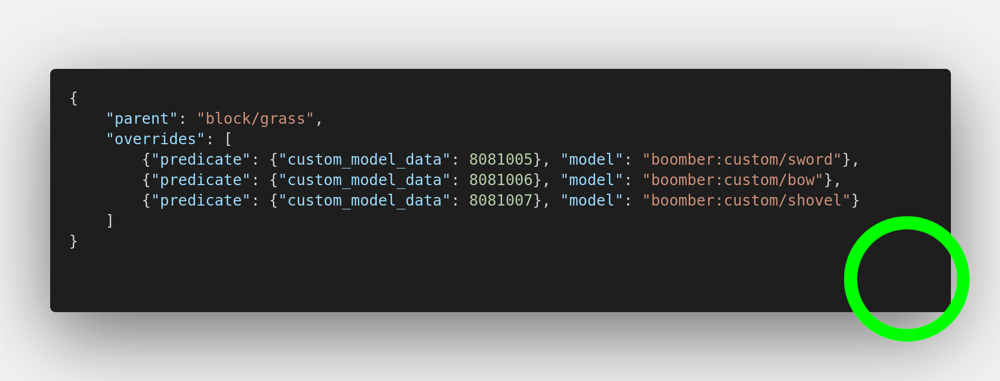
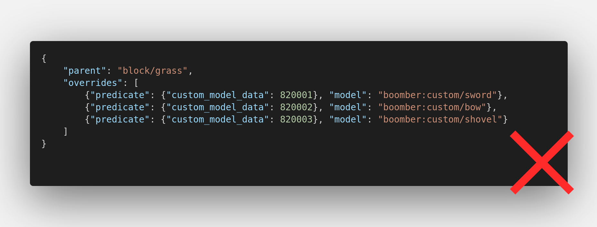
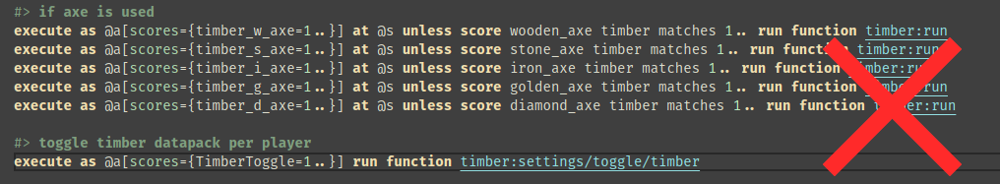
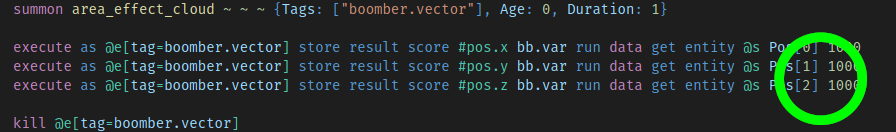

Datapack Review
This section contains information about how to properly verify a datapack inside #📍request-review channel.
Tooling
Although this step is not required, this tooling is recommended by me for its convenience with verifying datapack.
- Install VS Code or VS Codium
- Install the following extensions.
- Datapack Helper Plus
- This extension provides a syntax highlighting and various helper functionality to navigate through datapack.
- tellraw preview
- This extension provides text preview for commands that display a message to the player.
- Datapack Helper Plus
Verifying a Datapack
A datapack must follow all of Tier 3 conventions to be verified, any datapack that does not follow Tier 2 conventions will be notified as a warning.
Every verification must be reported back to the creator. This can be done in any way as you wish such as via private messaging or #📍request-review channel.
When the datapack is verified, you can post it to #✅certified-datapacks channel in the following format:
<Datapack name> by <Creator name>
<url to the project page>
It can also be changed if you see fit.
You also need to notify them that they can use the convention banner on their project page.
Custom Model ID (***)
This step can be skipped if the datapack does not require a resourcepack to play.
- Check the
IDof the model and theIDthat datapacker claim using https://mc-datapacks.web.app

This passed because the correct ID is used and it followed the convention correctly.

Wrong
ID, this should be808because Boomber claims the ID of808not82.

There was no attempt at following the convention here at all.
- Check for consistency of the ID with the datapack.

The datapack use the ID of
1while the resourcepack use the ID of808
Shulker Box Loot Table (***)
This step can be skipped if the datapack does not require Player Inventory manipulation to play.
To verify this convention, You must compare the loot table inside data/minecraft/loot_tables/blocks/yellow_shulker_box.json with this loot table
- If the datapack uses other shulker box for inventory manipulation they will get a warning but will still pass.
- If the datapack use yellow shulker box but with different loot table, they will not pass this convention.
Global Ignoring Tag (***)
This convention can be split into two sides: Entity Selection and Entity Creation.
- Entity Selection refers to using global ignoring tag inside entity selectors such as
@eand@a. - Entity Creation refers to using global ignoring tag when summoning or creating an entity, such as
/summon.
- Verify entity selector

This function did not take
global.ignoretag into account when querying for these entities.

Player (
@a) is still affected by global ignoring tag and this should ignoreglobal.ignoretag properly.
- Verify entity creation

This is a valid place to not use global ignoring tag since this is a temporary entity that is killed off right away.

This is a valid place to not use global ignoring tag since this is a custom mob entity that should be able to be manipulated by other datapacks. Such as receiving damage or being push away.

This is a "chunk marker" entity that shouldn't be move or kill by other datapack, so this entity must have
global.ignore,global.ignore.posandglobal.ignore.kill
Note
Since Global Ignoring Tag convention is an opt-in system if the datapacker insist that their entity shouldn't have global ignoring tag. They will still pass. There is no such exception in the Entity Selection part, however.
Namespace Convention (***)
I'm sure you guys already know what a namespace is but you should still read Namespace Convention page to understand the specification of our namespace.
Common Trait Convention (**)
This page is working in progress.
Because this is Tier 2 convention, you can skip this section for now until this is finished.
Datapack Advancement (*)
This is part of the Style Guideline, Failing to follow this will not affect the verification process.
-
Compare the content of the file
/data/global/advancements/root.jsonwith this one.
If it isn't the same then they have failed to follow this properly. -
Determine whether this datapack uses the normal syntax or the standalone datapack syntax.
- If use normal syntax, check where the Datapack Node file is.
if it's inside/data/global/advancements/directory, They have failed to follow this properly. - If use standalone datapack syntax, check where the Datapack Node file is.
if it's not inside/data/global/advancements/standalonedirectory, They have failed to follow this properly.
- If use normal syntax, check where the Datapack Node file is.
-
Check Namespace Node file. This file must contain information about the creator of the datapack only. Any information besides that (i.e. datapack name) will mean they have failed to follow this properly.
Datapack Uninstallation (*)
This is part of the Style Guideline, Failing to follow this will not affect the verification process.
- Check the project page of this datapack to see if the creator has specified any way to uninstall this datapack.
- Check that the provided uninstallation guide works inside the datapack.
Tier System
Each convention has a varying degree of importance, this system is put in place to categorized the importance of each convention.
| Levels | About |
|---|---|
| Tier 1 | A convention that doesn't contribute to ensuring compatibility between datapacks, or a convention that has just been newly voted in |
| Tier 2 | Transition phase from Tier 1 to Tier 3, This also serve as an adoption phase to encourage datapacker to follow these conventions to ensure compatibility in the future. |
| Tier 3 | The most important conventions that must be followed to ensure compatibility. Every datapacks is required to follow this convention, or it will break otherwise. |
Promoting a convention
A convention can be promoted into a higher tier if it fits in any of the following conditions:
- Tier 1 Convention cannot ensure compatibility without forcing that every datapack must follow it. (Tier 1 -> Tier 2)
- Tier 2 Convention has been adopted into a certain amount of datapacks. (Tier 2 -> Tier 3)
On the contrary, a convention can also be demoted into lower-tier if the compatibility the convention ensures become obsolete with the new update or the majority of datapackers sees so.
Shorthand
The tier can also be represented as a * symbol.
- Tier 1 ->
* - Tier 2 ->
** - Tier 3 ->
***
This can be attached after the convention name like so: Datapack Advancement (*), Common Trait Convention (**), Shulker Box Loot Table (***)
About
This section contains a list of conventions and where it is in the tier system.
| Convention | Levels |
|---|---|
| Datapack Advancement | Tier 1 |
| Datapack Uninstallation | Tier 1 |
| Global Durability Convention | Tier 1 |
| Common Trait Convention | Tier 2 |
| Global Ignoring Tag | Tier 3 |
| Custom Model ID | Tier 3 |
| Namespace Convention | Tier 3 |
| Shulker Box Loot Table | Tier 3 |
This must be updated whenever a change has been made to the official conventions list by any means!
Convention Banner
-
Datapack that has followed a bare metal Tier 3 conventions are allowed to use this banner

-
Datapack that has followed Tier 3 conventions and various style-related conventions defined in the Style Guideline section can use this banner.